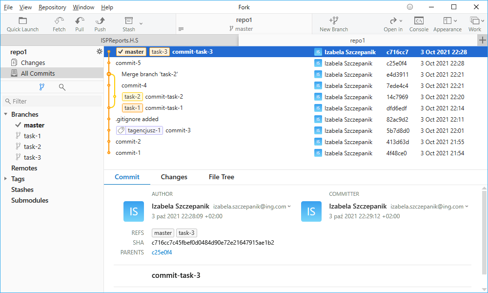

Rozpoczynasz pracę nad kolejną nową funkcjonalnością. Zgodnie ze sztuką robisz to na nowym branchu.
$ git checkout -b task-3
Zacznij od utworzenia nowego brancha o nazwie task-3, użyj polecenia, które od razu przeniesie cię na nowy branch.
$ git branch
Sprawdź jakie masz teraz u siebie branche.
Zrób zmiany w istniejących już plikach, zacommituj wszystkie zmiany, nazwij je commit-task-3.
$ git checkout master
Wróć na branch master. Następnie zrób utwórz nowy plik plik6.txt i zacommituj zmiany, nazwij je commit-5.
$ git checkout task-3
Wróć na branch task-3
$ git rebase master
Zrób rebase z masterem.
$ git checkout master
$ git merge task-3
$ git merge task-3
Przejdź na branch master i dopiero teraz zrób merge zmian z task-3
$ git status
$ git log --graph --oneline
$ git log --graph --oneline
Jaka jest różnica między merdżem task-3 a task-2 z poprzedniego ćwiczenia? Sprawdź status i log. Podejrzyj jak to wygląda w GUI
